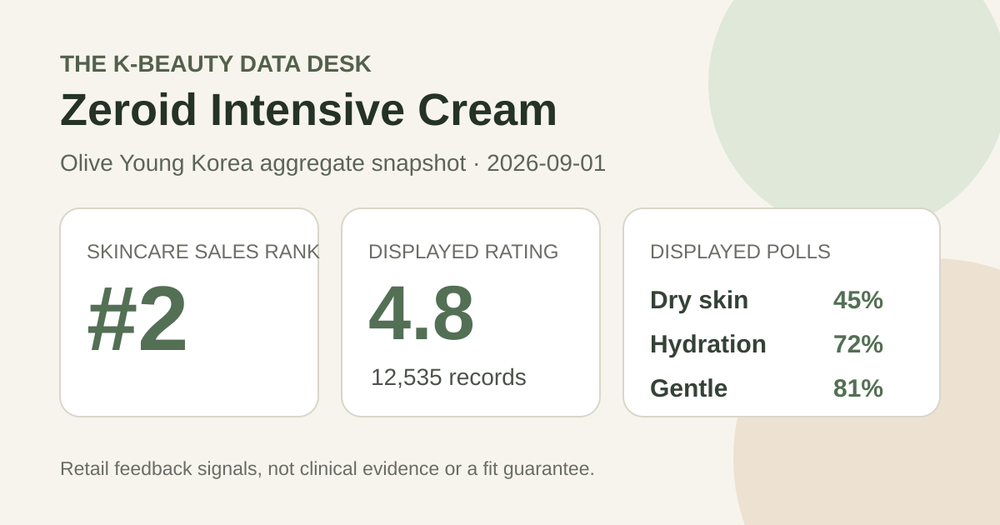
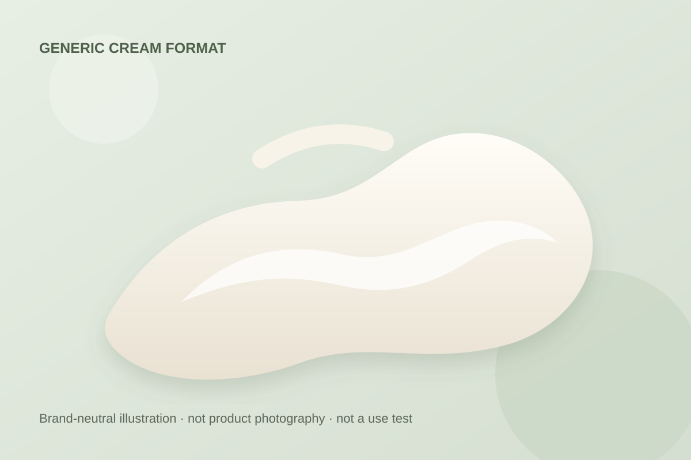

Data captured September 1, 2026. This article uses only the retailer's displayed product title, skincare sales rank, aggregate rating, review count, survey shares, and dated pack and price display. No individual review, reviewer name, product photograph, or user photograph is reproduced or translated. I did not test the product.

The short version: Zeroid Intensive Cream ranked second in the captured Olive Young Korea skincare sales list and displayed 4.8 out of 5 from 12,535 review records. Its survey panel showed dry skin 45%, hydration concern 72%, and a gentle response at 81%. These are retail feedback signals, not proof that the cream repairs a barrier, treats a condition, or suits every user.
The narrow conclusion is favorable: within this retailer's rating system, 12,535 linked records produced a one-decimal display of 4.8 on capture day. That is a substantial feedback base for seeing the direction of sentiment within the listing. It does not show what every reviewer expected, how long each person used the cream, or whether all linked records concern the exact 80 ml plus 50 ml promotional configuration displayed now.
The page did not expose a trustworthy five-, four-, three-, two-, and one-star breakdown. A 4.8 average can result from multiple distributions, and the one-decimal display hides additional precision. I therefore do not infer a five-star share or reconstruct missing buckets. The captured value is a snapshot, not evidence that the average has remained stable.
Large volume reduces the influence of any single score, but it does not remove selection effects. Reviewers come from shoppers who used this storefront and chose to leave feedback. Ratings may reflect delivery, value, packaging, incentives, expectations, or option changes alongside product experience. Volume does not transform self-selected commerce feedback into a clinical or representative study.
This was the leading displayed skin-type response. It describes representation, not a dry-skin performance score.
This identifies the leading concern response. It is not an instrument reading or proof of lasting moisturization.
This is a subjective aggregate response, not an allergy test, safety assessment, or guarantee for reactive skin.
The three percentages answer different questions and should not be added or averaged. Olive Young did not display a separate denominator for each survey, so there is no basis for assuming all 12,535 linked records answered every prompt. The leading answer also does not show how respondents were distributed across every other choice.
Dry skin at 45% says that group led the captured skin-type poll; it does not prove better results for dry skin. Hydration concern at 72% describes what respondents selected as a concern, not how much water content changed after application. The 81% gentle response is encouraging as a sentiment signal, but personal tolerance can vary with allergies, current barrier condition, amount, frequency, and the rest of a routine.

The listing categorizes the product as a cream, but I did not open, smell, spread, or layer it. Density, slip, absorption time, finish, residue, scent, pilling, and compatibility with sunscreen or makeup remain unknown here. The local illustration communicates only a generic cream format and deliberately avoids copying the retailer's product images, package design, logos, or colors.
A rich-looking marketing position does not establish the amount an individual should apply or the best step in a routine. Follow the directions and ingredient label on the actual market-specific package. Introducing one product at a time can make an unwanted change easier to identify, although that practice cannot guarantee safety or compatibility.
The English working name follows the Korean listing's Zeroid Intensive Cream title. “Intensive” is a product-line name, not a standardized measure of richness or effectiveness. Likewise, retailer images used barrier-care language and referenced company-provided testing claims, but this article does not reproduce those claims as independent findings. The retail review panel did not measure transepidermal water loss, barrier recovery, hydration depth, lesion count, itching, inflammation, or another clinical endpoint.
No percentage or concentration is inferred for any ingredient or proprietary system. Product names, diagrams, marketing order, price, and texture images cannot substitute for the full current ingredient label or a study report. A similarly named Zeroid item in another market may differ in pack, label, seller, or formula, so readers should confirm the exact item they are considering.
Rank two means this promotional listing had strong current sales momentum inside Olive Young Korea's skincare ranking at one moment on September 1. It does not mean second-best moisturizer, second-best cream for dry skin, or a stronger formula than every product below it. The captured page showed a one-day special, a character collaboration, extra product volume, a pouch, a 27% discount, coupons, and delivery badges. Those commerce conditions can influence buying velocity.
Rank and rating measure different things. Rank reflects recent retailer sales activity; rating summarizes feedback linked to a listing. Neither identifies why someone purchased, why a particular score was chosen, or what outcome followed. Ranking is useful here for choosing a timely product to audit, not for turning popularity into evidence of efficacy.
The captured listing described an 80 ml cream plus a 50 ml promotional unit and pouch, with a ₩40,000 reference price and a price displayed from ₩28,900. It also showed a 100 ml basis from ₩36,125. These were storefront values on September 1, 2026, not permanent prices or a promise that the same bundle will remain selected.
Before comparing value, confirm the option, total usable volume, coupon rules, seller, delivery terms, expiry information, and final checkout total. A larger bundle offers value only if the product will be used appropriately. Packaging, authorized sellers, return rights, and regional labeling can differ outside Korea.
I did not independently capture and reconcile the complete current ingredient list across markets. This article therefore does not claim the cream is fragrance-free, alcohol-free, essential-oil-free, hypoallergenic, non-comedogenic, pregnancy-compatible, or appropriate for acne, eczema, rosacea, allergy, broken skin, or another medical concern. Read the exact package for the item received.
An 81% gentle response cannot rule out stinging, congestion, allergy, or another unwanted experience. When a known allergy, prescription, skin condition, pregnancy, or previous serious reaction makes the decision higher stakes, qualified medical guidance is more appropriate than a retail average. Stop using a product and seek appropriate advice if a concerning reaction develops.
Not necessarily. The page did not expose a reliable star-by-star distribution, and several different distributions can round to 4.8.
No. Dry skin led the displayed poll at 45%, which describes respondents in that poll rather than comparative performance or guaranteed fit.
No. Hydration was the leading displayed concern response. It was not an instrumental measurement, before-and-after result, or controlled comparison.
No. The retailer displayed an 81% gentle response without a separate denominator. It remains subjective and cannot predict individual tolerance.
No. The ranking and detail page identified this listing as Zeroid Intensive Cream. The site treats it as a distinct product family from the previously covered Zeroid Soothing Cream.
No. The cream was not personally tested. The local texture graphic is illustrative only.
Zeroid Intensive Cream combines a strong retail signal—4.8 from 12,535 linked records—with rank-two sales momentum and displayed poll leaders of dry skin 45%, hydration concern 72%, and gentle response 81%. That is useful evidence of visibility and broadly positive storefront sentiment. It is not proof of barrier repair, measured moisturization, medical benefit, safety, or personal fit. The most defensible next step is to verify the exact option and ingredient label, then judge the actual formula within the intended routine.
Published by The K-Beauty Data Desk · Aggregate data captured 2026-09-01. No individual review, name, product photo, or user photo is reproduced or translated, and I did not test the product. I received no free product and am not paid or approved by the brand. Check the dated source listing.
← All reviews · Rankings · Skin-poll representation · Methodology